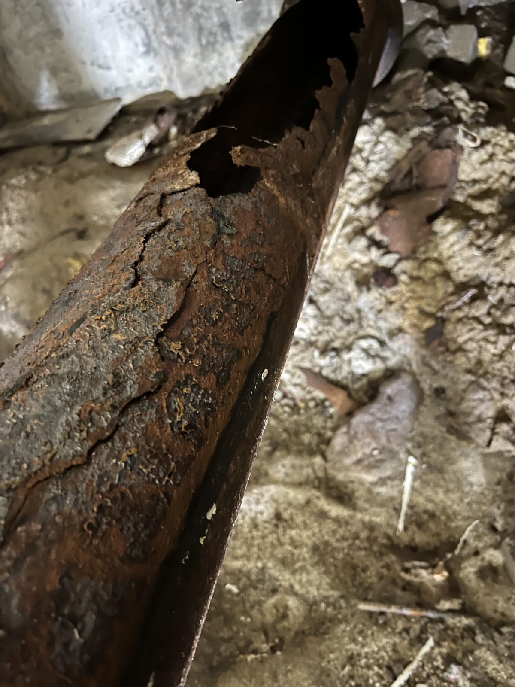
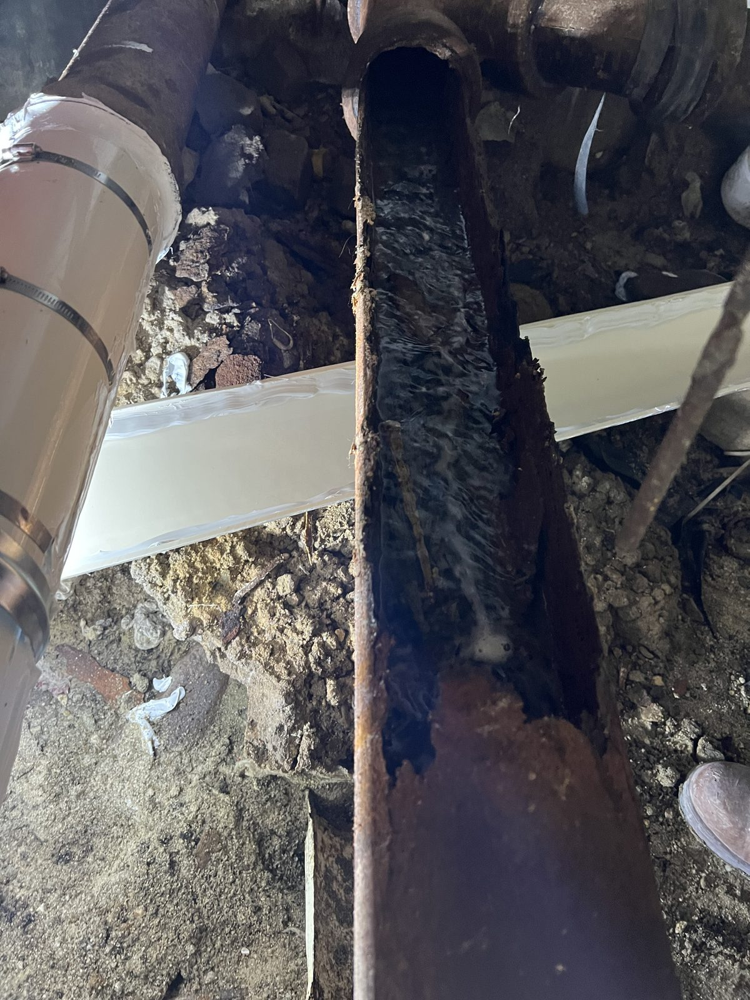
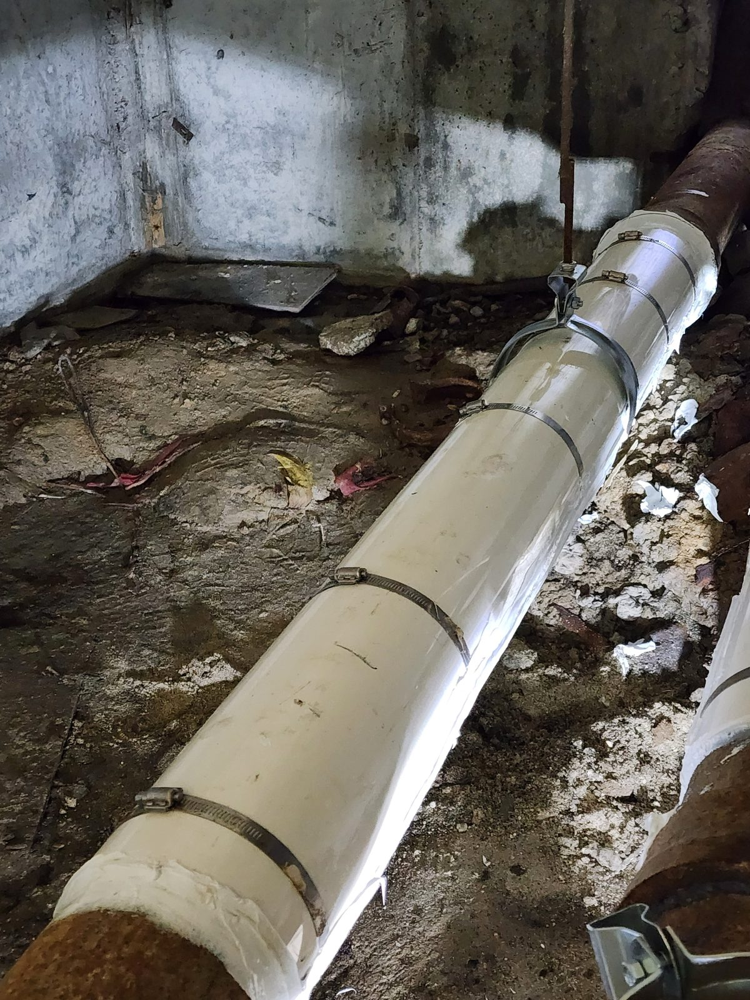
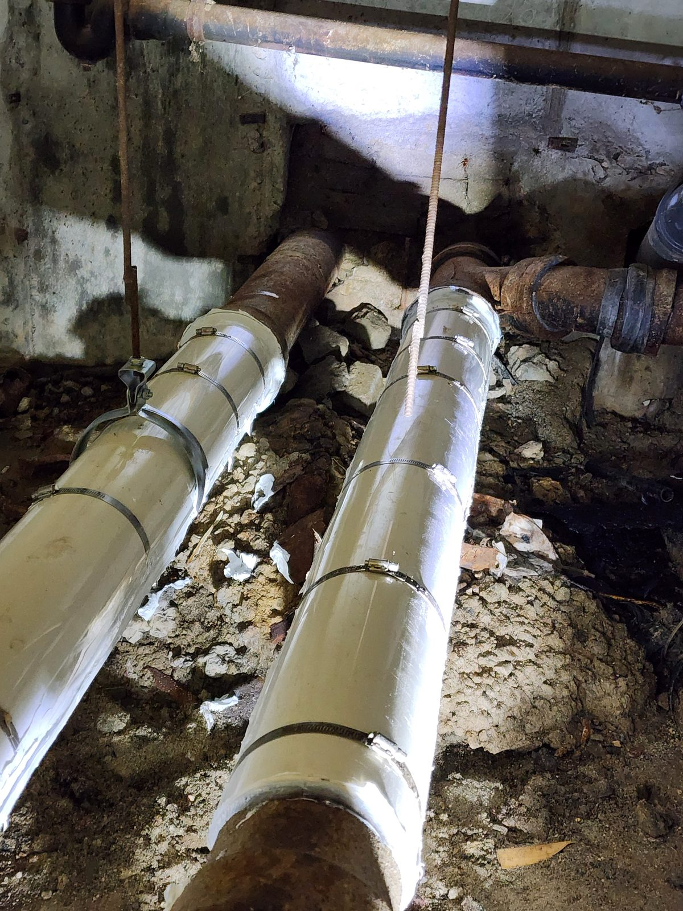
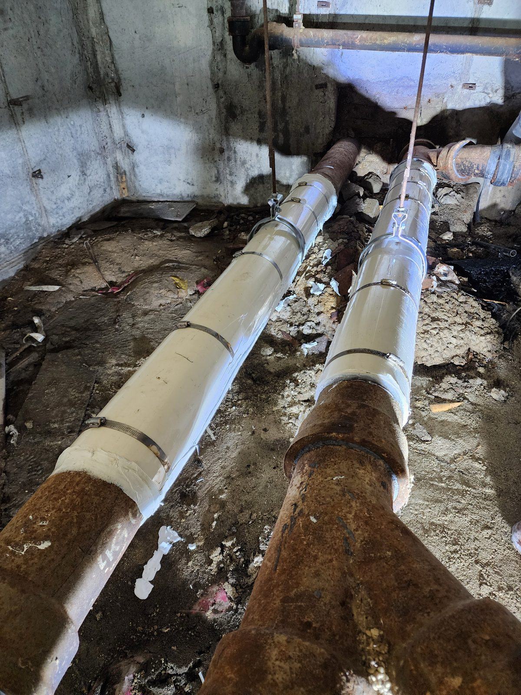

대전 아파트 지하실 주철관 보수 — 부식 구간부터 슬리브 마감까지

지하실에서 나란히 이어진 주철관 가운데 관벽이 벌어지고 부식이 두드러진 구간을 확인했습니다. 절개된 관 내부를 살핀 뒤 손상 구간에 보수 슬리브를 설치하고, 두 배관의 작업 후 모습까지 순서대로 기록했습니다.
처음 눈에 들어온 것은 벌어진 관벽이었습니다
지하실 배관을 확인하던 중 주철관 한 구간의 관벽이 길게 벌어진 상태가 보였습니다. 손상 부위와 주변의 부식된 표면을 함께 비교할 수 있도록 작업 전 모습을 가까이 남겼습니다.

겉면 다음에는 관 안쪽을 확인했습니다
절개된 관 안쪽과 가장자리 상태를 가까이 살폈습니다. 겉에서는 보기 어려웠던 내부 표면과 절개면이 한 화면에 보이도록 기록했습니다.

확인한 구간부터 슬리브로 감쌌습니다
손상 구간에는 주철관을 감싸는 흰색 보수 슬리브를 설치하고 금속 밴드로 고정했습니다. 슬리브가 기존 주철관 양쪽과 이어지는 모습도 작업 중 사진으로 남겼습니다.

나란한 두 배관을 차례로 정리했습니다
작업 범위는 한쪽 배관에서 끝나지 않았습니다. 나란히 지나가는 두 배관에 각각 슬리브와 고정 밴드를 설치하고, 손본 위치를 구분할 수 있도록 한 화면에 담았습니다.

마지막에는 전체 연결 상태를 남겼습니다
작업 후 두 배관의 슬리브와 기존 주철관이 이어지는 부분을 다시 촬영했습니다. 비슷한 파손이 보인다면 손상 부위의 근접 사진과 주변 배관이 함께 보이는 전체 사진을 준비하면 현장 점검 범위를 정하는 데 도움이 됩니다.
